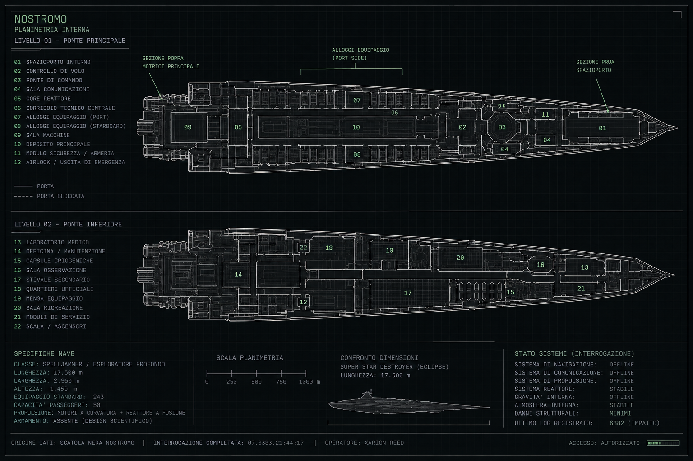

Scrivi anche una sola lettera · ↑ ↓ seleziona · Invio apre · ESC chiude
L’ESCHATONLUCIEN
POV: LUCIEN
Situazione attuale
Dashboard personale di Lucien. I dati qui presenti derivano dai documenti della campagna e dai reference canonici disponibili; le lacune restano esplicitamente non definite.
Lucien Vhaar
Veleggiante di Oceano, bardo, recuperatore di DAM e tecnico improvvisato dell'Era Atomica.
ADESSO La Nostromo ha respinto un abbordaggio. Il capitano dei Figli dell'Orizzonte è morto; tre uomini si sono arresi. Kethara è stata ingannata facendo risultare la spelljammer catturata in rientro lento per riparazioni. Lucien sta per intervenire sul suo sistema per cancellare configurazioni e legami con Kethara.
Pressioni aperte
Il falso broadcast religioso ha associato Vael al volere dell'Occhio del Creatore. Restano aperti il rischio di reazione di Kethara, i droni Resheph, le coordinate sull'Oron Esgail e la misteriosa voce intercettata dalla Nostromo.
V0.19 · RICHIESTA DEL MASTER
Riassunti cor Fischio
Gli eventi importanti dei capitoli reali del file Riassunto. Pochi punti, niente raccordi romanzati, niente battute ornamentali, niente fatti inventati.
⚡FISCHIOmodalità breve
Regola
I riassunti derivano dai tab Capitolo 1–5 del documento Google Drive Riassunto. Se il documento cambia, questa pagina va rigenerata: qui non vengono aggiunte informazioni per “far tornare” la storia.
Mondo conosciuto
Schema esplorabile, non una carta geografica in scala. Le posizioni senza fonte cartografica sono volutamente indicative.
Codex personaggi
Main character approvati + NPC canonici/provvisori. Le reference approvate restano bloccate; i nuovi concept v0.19 sono marcati da validare dal master.
La Nostromo
Planimetria canonica. Nelle versioni successive possiamo sovrapporre hotspot per stanze, sistemi, danni, oggetti e posizione del party.

Gli hotspot creati qui sono NOTE UTENTE, non coordinate canoniche. Servono a preparare il futuro ambiente 3D senza inventare la planimetria.
Timeline
Misteri & fili aperti
Separati dai fatti per non trasformare teorie del giocatore in canone.
Teorie di Lucien / Faerie
Ipotesi separate dai fatti confermati: servono come pista di indagine, non come canone.
Replay della campagna
Storyboard interattivo dal background di Lucien alla situazione attuale. È il telaio del futuro replay 3D: scene, cast, luoghi e dialoghi sono già separati dai dati.
Dialoghi
Fonte
Sequenza
Costruzione del mondo
Atlante di produzione: luoghi, PNG, reference mancanti e identità da confermare. Nessun dettaglio ignoto viene riempito automaticamente.
Luoghi da costruire
PNG e identità
Da identificare / confermare
Questi nomi compaiono nei materiali, ma non ho abbastanza dati per considerarne completa l’identità.
ATLANTE PLANETARIO
Mappa dei Mondi
Oceano, Ion e Thrantir sono tre pianeti distinti. Itoigawa, Kethara e la Linea Termica appartengono a Thrantir.
MAPPA DEI MONDI · disposizione schematica, non scala astronomica canonica
Concept art ≠ canone
Le immagini generate o provvisorie costruiscono il linguaggio visivo, ma diventano reference solo dopo conferma. I dettagli assenti dalle fonti restano inferiti o sconosciuti.
DIARIO DEL BARDO · STORIA CANONICA
Lucien · da Oceano a oggi
Un solo percorso: consulta gli eventi oppure riproduci le scene disponibili. I testi derivano dai documenti della campagna; ciò che non è documentato resta non descritto.
V0.18 · STRATI / COPERTINE
Capitoli visivi della campagna
Ogni strato usa una copertina dedicata e raccoglie scene, punti chiave e accesso rapido allo Scene Engine. Le copertine derivano dai reference approvati del Diario.
4 STRATI42 SCENECOPERTINE APPROVATE
Atlante asset
V0.17 · SCENE ENGINE
Timeline canonica → regia → Director → 3D
I 42 eventi censiti usano ID stabili. Fatti e dialoghi sono separati dalla regia: camera, luce e suono sono metadati di produzione e non diventano canone.
CAMERA · REGIA
LUCE · REGIA
AUDIO · REGIA
Cast & asset
Beat timeline
Dialoghi documentati
PROMPT PRODUZIONE · GENERATO, NON CANONICO
V0.16 · 3D RUNTIME
Scene Lab
Runtime 3D WebGL del Diario. Il vecchio ritaglio 2.5D è disattivato: questa scena accetta solo un vero attore 3D riggato. Finché il GLB di Lucien non esiste, nessun manichino lo sostituisce.
3DWEBGL RUNTIME
Cupola 5Premi AVVIA SCENA.
Premi PLAY per iniziare.
Regola fonte
Dialoghi e fatti mostrati dal player sono presi dai documenti della campagna. Il movimento 2.5D e la regia sono rappresentazioni visive, non nuovi eventi canonici.
PROTOTIPO REPLAY 2.5D
Scene Player
Camera, entrate, personaggi parlanti, sottotitoli. Nessuna GPU richiesta durante la riproduzione.
Sessione · Lucien Vhaar
Scheda digitale operativa. I campi personali non recuperati dal cartaceo restano esplicitamente da inserire; contatori e appunti vengono salvati sul dispositivo.
Spellbook
Inventario & appunti
V0.17 · BIBLE / REFERENCE STUDIO
Asset Bible
Un solo registro collega personaggi, luoghi, navi, oggetti e scene. Se un asset non esiste, il Diario lo dichiara invece di sostituirlo silenziosamente.
Reference Studio · Director
Reference Pack approvato per Director. Le immagini correnti sono separate dalle sorgenti storiche; clic/tap su qualunque immagine apre il viewer con zoom, pan, pinch e fullscreen.
REFERENCE ORIGINALE
TAVOLA APPROVATA · DIRECTOR
CONTRATTO / STATO
Registro asset
Audit scene · Thrantir
Ogni scena mostra gli asset richiesti. Verde = reference pronta, ambra = concept, rosso = mancante.
Prossime priorità
Regia & 3D
Pre-produzione del replay fotorealistico. Ogni scena del Diario viene preparata per diventare un ambiente 3D navigabile e, usando la stessa timeline, un filmato.
Shot list
Project Data · backup e handoff
Esporta note di sessione, contatori, voci, hotspot Nostromo e preferenze del Scene Engine. Il file non contiene le immagini: serve per migrare i dati personali tra versioni del Diario.
Lavagna delle teorie
Ipotesi di Lucien separate dal canone. Possono guidare le indagini, ma non diventano fatti finché la campagna non le conferma.
World Bible visuale
Fondamenta canoniche per il futuro mondo 3D. CANONICO = documentato; PARZIALE = sappiamo qualcosa ma manca una reference completa; SCONOSCIUTO = non viene inventato.
Regola del progetto
CANONICO: testo o immagine presente nei materiali. RICOSTRUZIONE: raccordo creato per il replay e sempre segnalato. SCONOSCIUTO: dato ancora non fornito.
Passa serio del Bardo
Primo pannello rapido da tavolo. Non sostituisce ancora una scheda completa: serve a mostrare come il materiale scritto a mano può diventare consultabile in gioco.
Ruolo
Supporto, volto sociale, conoscenze, musica bardica e magia spontanea basata sul Carisma.
Musica bardica Usi e capacità dipendono dal livello e dai gradi in Intrattenere.
Ispirare coraggio Bonus morale contro charme/paura e a colpire/danni; persiste per 5 round dopo l'ascolto.
Affascinare Richiede attenzione, vista/udito e prova di Intrattenere; minacce evidenti interrompono l'effetto.
Ispirare competenza Aiuta un alleato in una specifica prova di abilità mentre Lucien mantiene la performance.
Per la prossima versione
Qui possiamo trasformare davvero il tuo documento Bardo in un pannello da sessione: incantesimi conosciuti, slot giornalieri, CD calcolate, abilità, musica bardica, equipaggiamento, DAM, note e pulsanti “usato/ripristina”.
La struttura dati è già separata: possiamo aggiungere la scheda completa senza rifare il sito.
Espandere il Companion
Struttura
assets/characters, assets/places, assets/ships contengono le immagini. I dati sono in data/*.json; js/data.js contiene la copia caricata offline dal browser.
Nuovi personaggi possono avere più reference; i luoghi possono acquisire mappe; la Nostromo può ricevere hotspot; il Fog of War può essere gestito con un campo di stato. Nessun dato di Lloyd è incluso.
Nota v0.9.3: il companion è completamente offline. Per mantenere compatibilità con apertura diretta da Android/Windows, il browser usa js/data.js. I JSON separati sono mantenuti come formato sorgente espandibile.
Manuali del master
Spelljammer 3.5 e armi dell’Era Atomica · fonti aggiornate il 4 ottobre 2026.
Viewer
Rotellina / +− per zoom · trascina per pan · pinch su smartphone · doppio tap adatta/100%